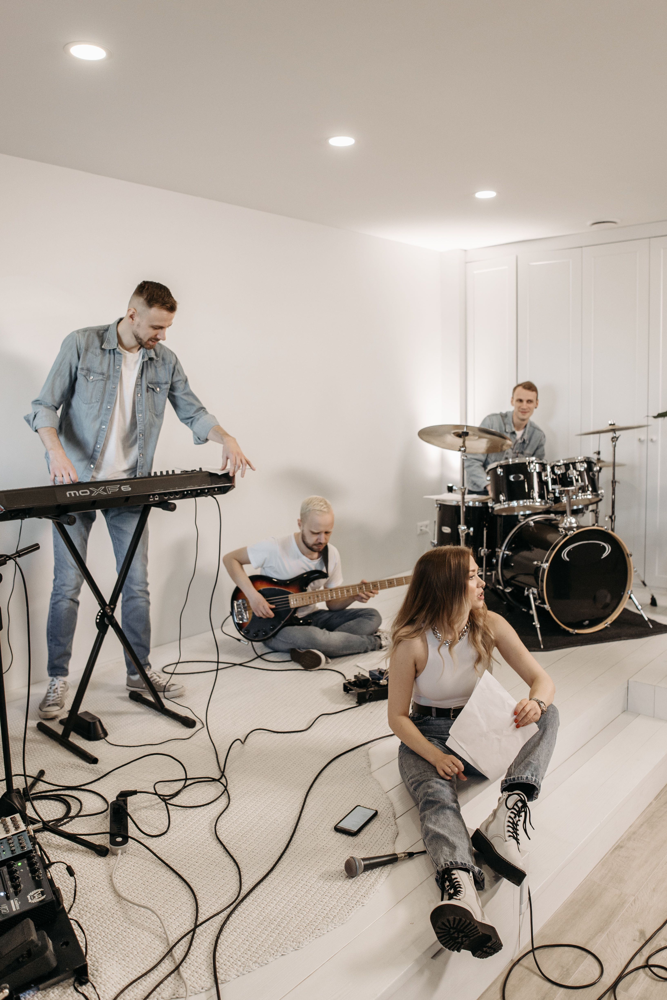
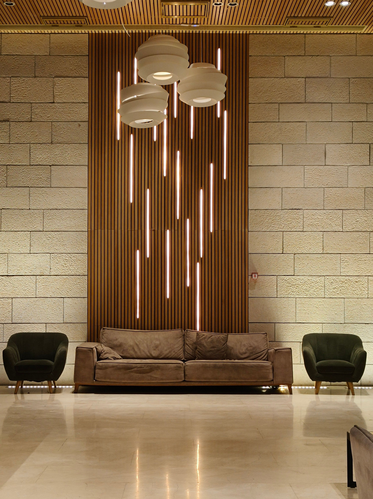

01 / RECORD
Main Recording Studio
Professional microphones, acoustic treatment and studio monitoring for clean, expressive recordings.

A HOME FOR GOSPEL MUSIC
A creative home for gospel artists, choirs and worship teams — from the first idea to the final performance.
Haven Music Centre is a dedicated creative space for gospel music. We bring recording, rehearsal, production and live performance together under one roof, giving every artist the room and support to create with confidence.
Whether you're recording a solo, preparing a choir or bringing a live audience together, we're here to help you make something meaningful.
What we do ↗
ROOM TO CREATE
Every space has a purpose. Every detail is considered. Find the right setting for whatever you're bringing to life.
Professional microphones, acoustic treatment and studio monitoring for clean, expressive recordings.

Space for full-band sessions, live recordings and instrumental performances.

A dedicated room for choirs, vocal groups and worship teams to find their blend.

A stage, professional sound and lighting for concerts, launches and listening events.

A focused environment for composition, arrangement, beat-making and engineering.

A relaxed reception space to meet your team and recharge between sessions.
FROM IDEA TO FINISH
One creative partner through every part of the process.
A GLIMPSE INSIDE
A few moments from the creative process — the people, the details and the music that bring the rooms to life.


THE HAVEN EXPERIENCE
“A space where the music can be heard, the message can be felt, and creativity can flourish.”THE HAVEN APPROACH
YOUR NEXT SESSION STARTS HERE
Have a project in mind? Tell us what you're working on and let's find the right space for it.